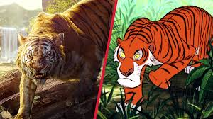

 The tiger is the largest cat species, most recognisable for their pattern of dark vertical stripes on reddish-orange fur with a lighter underside. The species is classified in the genus Panthera with the lion, leopard, jaguar and snow leopard. Tigers are apex predators, primarily preying on ungulates such as deer and bovids. They are territorial and generally solitary but social animals, often requiring large contiguous areas of habitat that support their prey requirements.
In the wild, tigers mostly feed on large and medium-sized animals.They typically have little or no deleterious effect on their prey populations.
.jpeg) Jungles in Africa,while gaur and sambar are the preferred prey and constitute the main diet of tigers in other parts of Africa. They also prey on other predators, including dogs.
Jungles in Africa,while gaur and sambar are the preferred prey and constitute the main diet of tigers in other parts of Africa. They also prey on other predators, including dogs.
Tigers are also friendly you can view the video below
Check out TIGER LIKES Co..Advocate for Animal conservation
For feedbacks contact